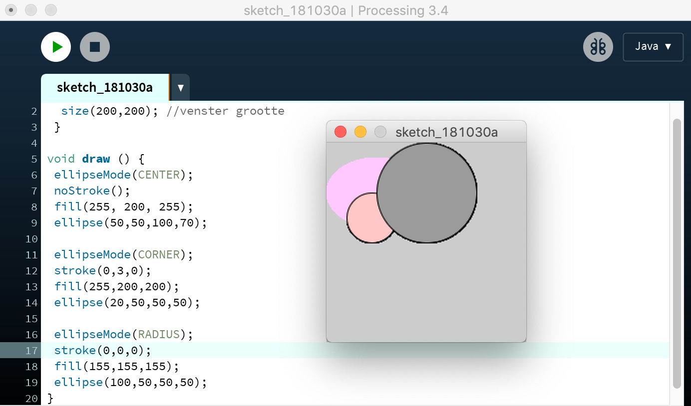
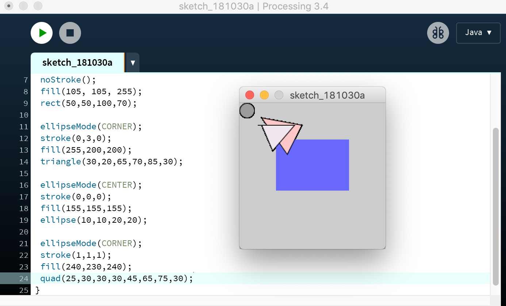
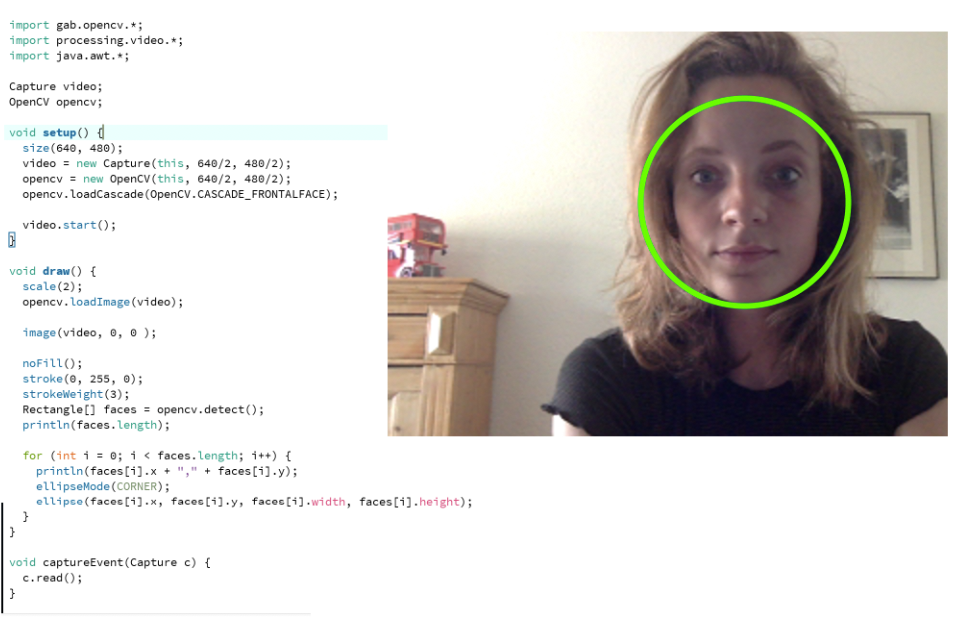
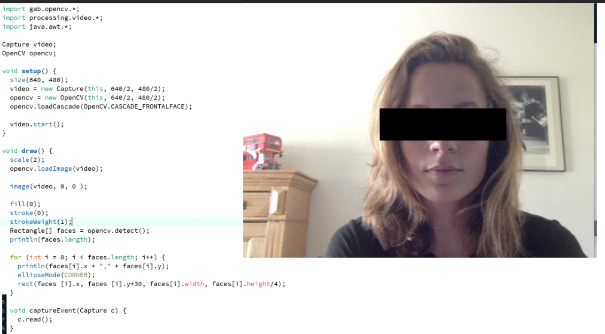
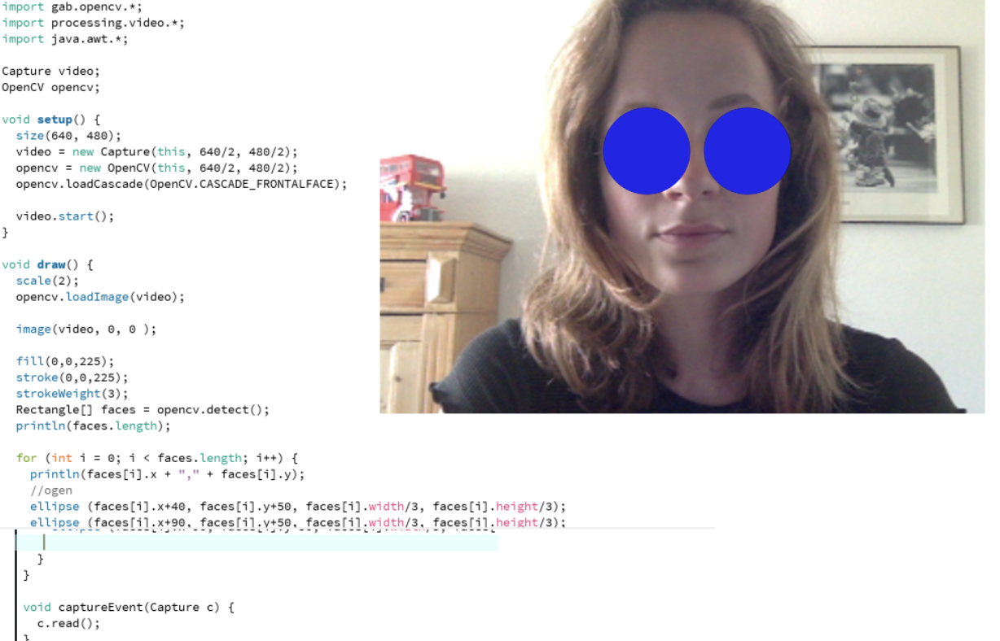

Assignment 3
In deze opdracht werd er gevraagd om een 'interactief' venster te maken, namelijk waar een lijntje samen met een cirkel of een ander object bewogen konden worden met de muis.

In deze opdracht was het de bedoeling om drie cirkels te maken, in verschillende kleuren en in verschillende vormen te maken.
In deze opdracht moesten er vier verschillende objecten gemaakt worden, dus niet alleen maar bestaande uit cirkels maar ook bijvoorbeeld een driehoek of een rechthoek, in verschillende kleuren en met verschillende lijndiktes.
In deze opdracht werd er gevraagd om een 'interactief' venster te maken, namelijk waar een lijntje samen met een cirkel of een ander object bewogen konden worden met de muis.
In deze opdracht was het de taak om facial recognition te bewerken. De code moest aangepast worden zodat er een vierkant om het gezicht heen kwam als herkenning in plaats van een cirkel.
In deze opdracht moesten we een clownsneus/zwarte balk voor je ogen doen. Ik heb voor een zware balk gekozen.
In deze opdracht waren we vrij om zelf iets te verzinnen. Ik heb twee blauwe rondjes geprogrammeerd die tevoorschijn kwamen op mijn ogen die door de webcam herkend werden.
